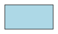
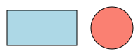
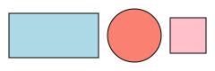
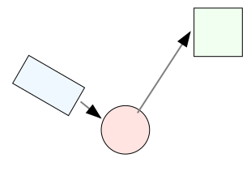
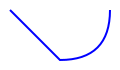
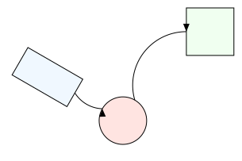
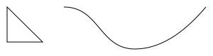
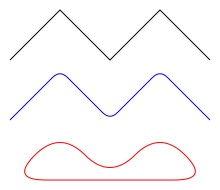

This guide will walk you through building a scene from scratch, demonstrating how Tesserax handles shapes, positioning, and composition.
The Canvas and the First Shape
Every drawing starts with a Canvas. In Tesserax, the Canvas acts as the root container and provides a context manager to automatically add shapes created within its block.
We will start by creating a simple 100x50 rectangle.
Code
from tesserax import Canvas, Rect# Initialize the canvaswith Canvas() as canvas:# Adding our first shape# Primitives support standard SVG attributes like fill Rect(100, 50, fill="lightblue")# fit() adjusts the viewport to the content# display() renders it directly in the documentationcanvas.fit(padding=10).display()

Drawing Text
Text behaves exactly like any other shape in Tesserax.
Code
from tesserax import Canvas, Textwith Canvas() as canvas: Rect(150, 40, fill="lightblue") Text("Hello World", size=24, font="serif")canvas.align().fit(10).display()

Adding and Transforming Shapes
While you can add shapes and manually set their coordinates, Tesserax provides a fluent API for transformations. Here, we add a Circle and use translated() to move it into position.
Code
from tesserax import Canvas, Rect, Circlewith Canvas() as canvas: Rect(100, 50, fill="lightblue")# Adding a second shape and moving it manually# Circle is defined by its radius Circle(30, fill="salmon").translated(100, 0)canvas.fit(padding=10).display()
Grouping and Aligning Shapes
The Group class acts a container that has control over its children positions, so you can align and layout shapes easily with a procedural API.
Code
from tesserax import Canvas, Rect, Circle, Square, Groupwith Canvas() as canvas:with Group() as g: Rect(100, 50, fill="lightblue") Circle(30, fill="salmon") Square(40, fill="pink") g.align("vertical", "center").distribute("horizontal", gap=10)canvas.fit(padding=10).display()

Simplifying with Layouts
Manually calculating offsets or calling procedural alignment becomes tedious in complex diagrams. Layouts automate this positioning. The Row layout arranges its children horizontally with an optional gap. The Column does so vertically.
Code
from tesserax import Canvas, Rect, Circlefrom tesserax.layout import RowLayoutwith Canvas() as canvas:# Row is also a context managerwith RowLayout(gap=10): Rect(100, 50, fill="lightblue") Circle(30, fill="salmon") Square(40, fill="pink")canvas.fit(padding=10).display()

Composing Transforms and Groups
Because Layouts are themselves a type of Group, you can apply transformations to the entire layout at once. In this step, we will:
Create a Row layout.
Rotate that entire row by 45 degrees.
Add a new shape outside of that row.
Wrap everything in another Group to demonstrate hierarchical composition.
Code
from tesserax import Canvas, Rect, Circle, Group, degfrom tesserax.layout import RowLayoutwith Canvas() as canvas:# Create and rotate a layoutwith RowLayout(gap=20).rotated(deg(-45)): Rect(100, 50, fill="lightblue") Circle(30, fill="salmon")# Add another shape to the scene Rect(40, 40, fill="lightgreen").translated(100, -50)# All shapes here are already part of the Canvas group.canvas.fit(padding=10).display()

By nesting Layouts and Groups, you can build extremely complex diagrams without ever having to manually compute a single SVG coordinate string.
Bridging Contexts with Anchors
One of the most powerful features of Tesserax is the Anchor System. When you place a shape inside a Layout or a Group, its local coordinates change to reflect its position within that container. However, Tesserax allows you to retrieve the “global” position of a shape’s anchors, making it trivial to connect objects across different coordinate systems.
In this example, we will connect the Circle (which is inside a rotated Row) to the Rect (which is outside) using an Arrow, and the two shapes inside the row. Notice the curvature parameter which controls the direction (sign) and radius of curvature, from \(0\) (flat) to \(1\) (full semicirle).
Code
from tesserax import Canvas, Rect, Circle, Arrow, degfrom tesserax.layout import RowLayoutwith Canvas() as canvas:# 1. Create a Row and rotate itwith RowLayout(gap=40) as row: r1 = Rect(80, 40, fill="aliceblue") c1 = Circle(30, fill="mistyrose") row.rotated(deg(270)).translated(50, 50)# 2. Create a target rectangle outside the layout target = Rect(60, 60, fill="honeydew").translated(250, 0)# 3. Connect them!# We use .anchor() to get semantic points.# Even though c1 is inside a rotated row, c1.anchor("right")# returns the correct global coordinate for the arrow. Arrow( r1.anchor("right"), c1.anchor("left"), curvature=-0.25, ) Arrow( c1.anchor("top"), target.anchor("left"), curvature=0.5, )canvas.fit(padding=10).display()

How Coordinate Mapping Works
When you call shape.anchor(name), Tesserax performs the following behind the scenes:
Local Geometry: It identifies the point on the shape (e.g., the rightmost edge of the Circle).
Transformation Path: It traverses up the hierarchy (from the Circle to the Row, then to the Canvas), applying every rotation, scale, and translation encountered along the way.
Global Result: It returns a Point that represents exactly where that anchor sits on the final SVG canvas.
This means you never have to manually calculate sin() or cos() to find where a rotated object’s edge is located—you just ask for the anchor.
For explicit anchoring, you can use Shape.resolve(p: Point) to map a point in local space to the global space, this way you can, e.g., get the point at 2/3rds of the way inside a rectangle and map it to global space.
Drawing Paths and Lines
While shapes like Rect and Circle cover many use cases, sometimes you need to draw arbitrary lines, custom shapes, or connectors. Tesserax offers two ways to do this: the low-level Path for precise control and the high-level Polyline for rapid sequences.
The Low-Level Path Object
The Path class roughly corresponds to the SVG <path> element. It operates like a pen: you move it to a location, then draw lines or curves to subsequent points.
This is ideal for creating custom glyphs or specific geometric curves.
Code
from tesserax import Canvas, Pathwith Canvas() as canvas:# 1. A simple custom shape (a triangle) p = Path() p.jump_to(0, 0).line_to(50, 50).line_to(0, 50).close() p.translated(20, 20)# 2. A curved path using Bezier curves curve = Path() curve.jump_to(100, 20)# Cubic Bezier: 2 control points, 1 end point curve.cubic_to(150, 20, # Control Point 1150, 80, # Control Point 2200, 80# End Point )# Quadratic Bezier: 1 control point, 1 end point curve.quadratic_to(250, 80, # Control Point300, 20# End Point )canvas.fit(padding=10).display()

The High-Level Polyline
For many diagrams, you simply want to connect a sequence of points. The Polyline shape automates this.
Its most powerful feature is the smoothness parameter. Instead of manually calculating Bezier control points to round a corner, you can simply tell Polyline to blend the corners for you.
smoothness=0: Sharp corners (standard polygon).
smoothness=0.2: Subtle rounded corners (like a modern UI box).
smoothness=1: Maximum rounding (spline-like).
Code
from tesserax import Canvas, Polyline, Point# Helper to generate a zigzag patternpoints = [ Point(0, 50), Point(50, 0), Point(100, 50), Point(150, 0), Point(200, 50)]with Canvas() as canvas:# 1. Sharp Polyline (Default) Polyline(points, smoothness=0).translated(0, 0)# 2. Slightly Rounded (30% smoothing)# Note how it preserves most of the straight line but rounds the tip. Polyline(points, smoothness=0.3, stroke="blue").translated(0, 60)# 3. Fully Smooth (100% smoothing)# This creates a flowing wave-like appearance, and closed. Polyline(points, smoothness=1.0, stroke="red", closed=True).translated(0, 120)canvas.fit(10).display()

This makes Polyline an excellent tool for drawing graph edges, wiring diagrams, or “hand-drawn” style annotations where sharp vertices look unnatural.
Using smart connections
When drawing complex diagrams, it is often hard to wire connections in a way that respects shapes, especially if you keep changing the code. The Grid object in tesserax.path provides a way to keep track of where shapes are placed inside a group, and trace method to automatically find optimal routes for connections that do not collide with shapes.